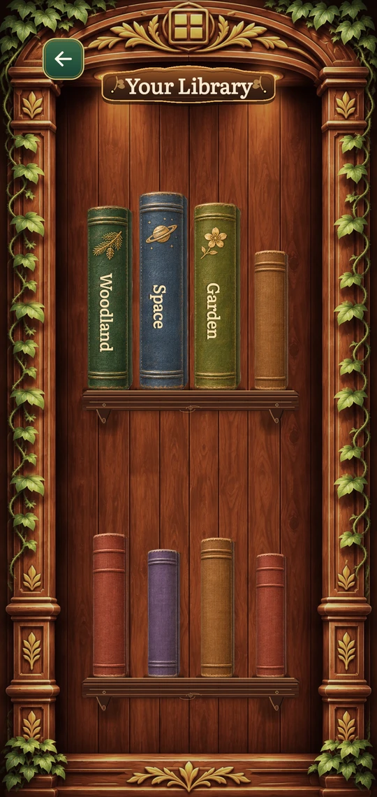
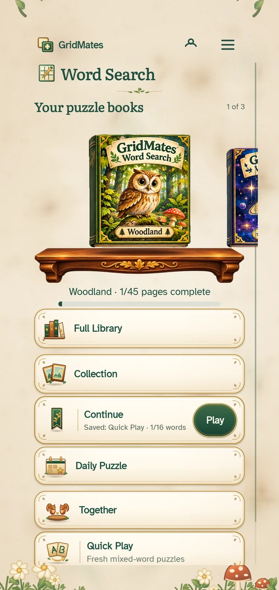
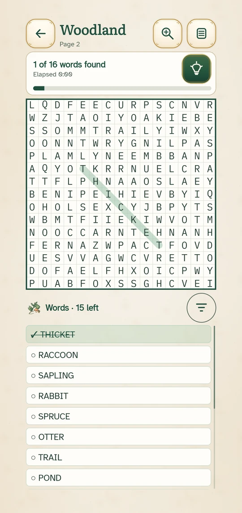

Classic word discovery
Find words in letter grids.
Development screenshots · features may change.
A game by Spudacus
Discover words at your own pace.
An Android word-search game in development, with themed puzzle books.
Explore the puzzle books


Find words in letter grids.
Explore different themes, sizes and challenge settings.
Offline Solo and Daily puzzles are part of the development direction.
In development. Release availability is not announced. Features may change.